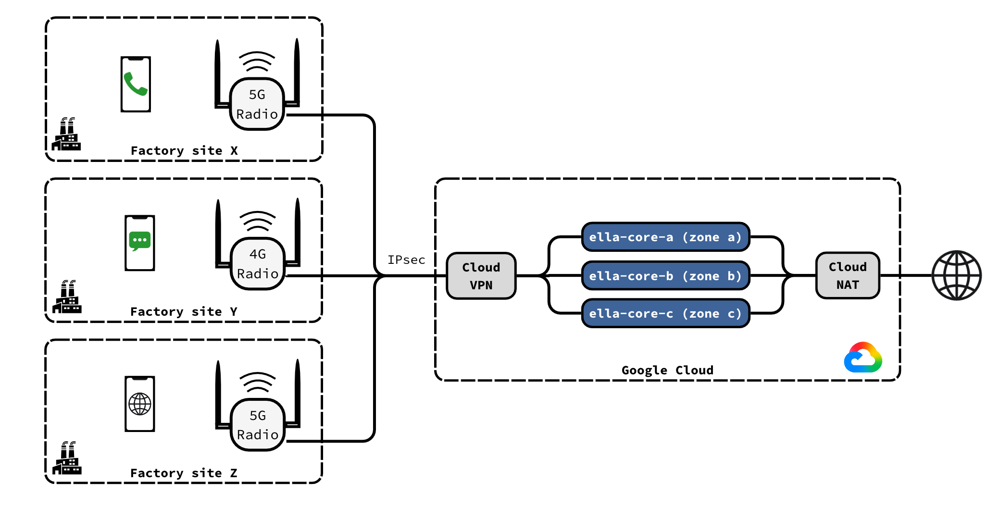
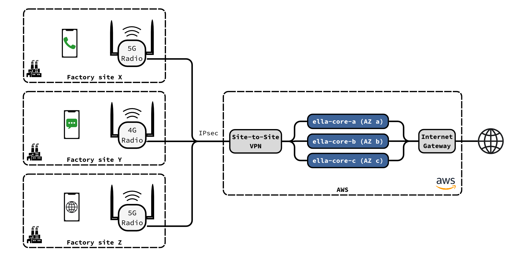
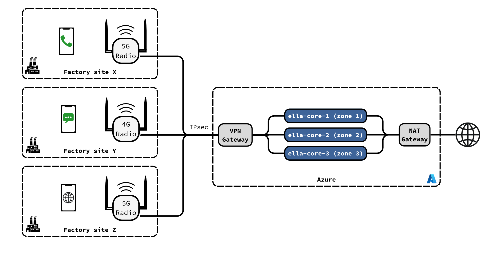

Deploy in the Cloud¶
Run Ella Core in the cloud while your radios stay on site. Deploy a three-node cluster across three zones and connect a radio to it over IPsec.
Note
This guide uses cloud instances. Ella Core can also run on managed Kubernetes, such as GKE or EKS.






Prerequisites¶
- A radio that supports IPsec and several MME or AMF addresses. Without IPsec on the radio, use an IPsec router at the site.
- A Google Cloud project and the
gcloudCLI.
The examples use 203.0.113.10 for the site's public address, 192.168.1.50 for the radio, and 10.128.0.0/20 for the default subnet in us-central1.
- An AWS account and the
awsCLI.
The examples use 203.0.113.10 for the site's public address, 192.168.1.50 for the radio, and the default VPC (172.31.0.0/16) in us-east-1.
- An Azure subscription and the
azCLI, with thebastionandsshextensions. - An SSH key at
~/.ssh/id_ed25519.
The examples use 203.0.113.10 for the site's public address, 192.168.1.50 for the radio, and 10.10.0.0/16 for the virtual network in eastus.
1. Prepare the project¶
Set the project and region:
gcloud config set project <project>
R="--region us-central1"
Allow the radio to reach Ella Core:
gcloud compute firewall-rules create ella-core-allow-radio --network default \
--allow sctp:36412,sctp:38412,udp:2152,icmp \
--source-ranges 192.168.1.50/32 --target-tags ella-core
Allow the nodes to reach each other:
gcloud compute firewall-rules create ella-core-allow-cluster --network default \
--allow tcp:7000 --source-tags ella-core --target-tags ella-core
Allow Identity-Aware Proxy (IAP) to reach SSH and the UI:
gcloud compute firewall-rules create ella-core-allow-iap --network default \
--allow tcp:22,tcp:5002 --source-ranges 35.235.240.0/20 --target-tags ella-core
Give the instances internet access:
gcloud compute routers create ella-nat-router --network default $R
gcloud compute routers nats create ella-nat --router ella-nat-router $R \
--auto-allocate-nat-external-ips --nat-all-subnet-ip-ranges
Set the region and find the default VPC:
export AWS_REGION=us-east-1
VPC=$(aws ec2 describe-vpcs --filters Name=isDefault,Values=true --query 'Vpcs[0].VpcId' --output text)
Allow the radio to reach Ella Core, and the nodes to reach each other:
SG=$(aws ec2 create-security-group --group-name ella-core --description "Ella Core" --vpc-id $VPC --query GroupId --output text)
aws ec2 authorize-security-group-ingress --group-id $SG --ip-permissions \
'IpProtocol=132,IpRanges=[{CidrIp=192.168.1.50/32}]' \
'IpProtocol=udp,FromPort=2152,ToPort=2152,IpRanges=[{CidrIp=192.168.1.50/32}]' \
'IpProtocol=icmp,FromPort=-1,ToPort=-1,IpRanges=[{CidrIp=192.168.1.50/32}]' \
"IpProtocol=tcp,FromPort=7000,ToPort=7000,UserIdGroupPairs=[{GroupId=$SG}]"
Allow Session Manager to reach the instances:
aws iam create-role --role-name ella-core-ssm --assume-role-policy-document \
'{"Version":"2012-10-17","Statement":[{"Effect":"Allow","Principal":{"Service":"ec2.amazonaws.com"},"Action":"sts:AssumeRole"}]}'
aws iam attach-role-policy --role-name ella-core-ssm --policy-arn arn:aws:iam::aws:policy/AmazonSSMManagedInstanceCore
aws iam create-instance-profile --instance-profile-name ella-core-ssm
aws iam add-role-to-instance-profile --instance-profile-name ella-core-ssm --role-name ella-core-ssm
Create the resource group:
az group create -n ella-core -l eastus
G="-g ella-core"
Create the virtual network, with subnets for the instances, the VPN gateway and Bastion:
az network vnet create $G -n ella-vnet --address-prefixes 10.10.0.0/16 --subnet-name ella --subnet-prefixes 10.10.1.0/24
az network vnet subnet create $G --vnet-name ella-vnet -n GatewaySubnet --address-prefixes 10.10.255.0/27
az network vnet subnet create $G --vnet-name ella-vnet -n AzureBastionSubnet --address-prefixes 10.10.254.0/26
Give the instances internet access:
az network public-ip create $G -n ella-nat-ip --sku StandardV2 --allocation-method Static
az network nat gateway create $G -n ella-nat --sku StandardV2 --public-ip-addresses ella-nat-ip
az network vnet subnet update $G --vnet-name ella-vnet -n ella --nat-gateway ella-nat
Create a Bastion host to reach SSH and the UI:
az network public-ip create $G -n ella-bastion-ip --sku Standard
az network bastion create $G -n ella-bastion --vnet-name ella-vnet --public-ip-address ella-bastion-ip \
--sku Standard --enable-tunneling
2. Create the VPN gateway¶
Create a Classic VPN gateway:
gcloud compute addresses create radio-vpn-ip $R
GW=$(gcloud compute addresses describe radio-vpn-ip $R --format='value(address)')
echo $GW
gcloud compute target-vpn-gateways create radio-vpn --network default $R
gcloud compute forwarding-rules create radio-vpn-esp $R --address $GW --target-vpn-gateway radio-vpn --ip-protocol ESP
gcloud compute forwarding-rules create radio-vpn-udp500 $R --address $GW --target-vpn-gateway radio-vpn --ip-protocol UDP --ports 500
gcloud compute forwarding-rules create radio-vpn-udp4500 $R --address $GW --target-vpn-gateway radio-vpn --ip-protocol UDP --ports 4500
Create a pre-shared key, the tunnel, and a route to the radio:
head -c 32 /dev/urandom | base64 | tr -d '/+=' | head -c 32 > radio-vpn.psk
gcloud compute vpn-tunnels create radio-tunnel $R --target-vpn-gateway radio-vpn \
--peer-address 203.0.113.10 --ike-version 2 --shared-secret "$(cat radio-vpn.psk)" \
--local-traffic-selector 10.128.0.0/20 --remote-traffic-selector 192.168.1.50/32
gcloud compute routes create radio-route --network default --destination-range 192.168.1.50/32 \
--next-hop-vpn-tunnel radio-tunnel --next-hop-vpn-tunnel-region us-central1
Create a virtual private gateway and attach it to the VPC:
VGW=$(aws ec2 create-vpn-gateway --type ipsec.1 --query VpnGateway.VpnGatewayId --output text)
aws ec2 attach-vpn-gateway --vpn-gateway-id $VGW --vpc-id $VPC
until [ "$(aws ec2 describe-vpn-gateways --vpn-gateway-ids $VGW --query 'VpnGateways[0].VpcAttachments[0].State' --output text)" = attached ]; do sleep 5; done
RT=$(aws ec2 describe-route-tables --filters Name=vpc-id,Values=$VPC Name=association.main,Values=true --query 'RouteTables[0].RouteTableId' --output text)
aws ec2 enable-vgw-route-propagation --route-table-id $RT --gateway-id $VGW
Create a customer gateway for the site, a pre-shared key, the VPN connection, and a route to the radio:
CGW=$(aws ec2 create-customer-gateway --type ipsec.1 --ip-address 203.0.113.10 --bgp-asn 65000 --query CustomerGateway.CustomerGatewayId --output text)
head -c 32 /dev/urandom | base64 | tr -d '/+=' | head -c 31 | sed 's/^/k/' > radio-vpn.psk
T='{"IKEVersions":[{"Value":"ikev2"}],"PreSharedKey":"'$(cat radio-vpn.psk)'","Phase1EncryptionAlgorithms":[{"Value":"AES256"}],"Phase2EncryptionAlgorithms":[{"Value":"AES256"}],"Phase1IntegrityAlgorithms":[{"Value":"SHA2-256"}],"Phase2IntegrityAlgorithms":[{"Value":"SHA2-256"}],"Phase1DHGroupNumbers":[{"Value":14}],"Phase2DHGroupNumbers":[{"Value":14}]}'
VPN=$(aws ec2 create-vpn-connection --type ipsec.1 --customer-gateway-id $CGW --vpn-gateway-id $VGW \
--options '{"StaticRoutesOnly":true,"LocalIpv4NetworkCidr":"192.168.1.50/32","RemoteIpv4NetworkCidr":"172.31.0.0/16","TunnelOptions":['"$T,$T"']}' \
--query VpnConnection.VpnConnectionId --output text)
aws ec2 create-vpn-connection-route --vpn-connection-id $VPN --destination-cidr-block 192.168.1.50/32
GW=$(aws ec2 describe-vpn-connections --vpn-connection-ids $VPN --query 'VpnConnections[0].VgwTelemetry[0].OutsideIpAddress' --output text)
echo $GW
Create the VPN gateway. This can take 45 minutes:
az network public-ip create $G -n radio-vpn-ip --sku Standard --zone 1 2 3
az network vnet-gateway create $G -n radio-vpn --vnet ella-vnet --public-ip-addresses radio-vpn-ip \
--gateway-type Vpn --vpn-type RouteBased --sku VpnGw1AZ
GW=$(az network public-ip show $G -n radio-vpn-ip --query ipAddress -o tsv)
echo $GW
Create a local network gateway for the site, a pre-shared key, and the connection:
az network local-gateway create $G -n radio-site --gateway-ip-address 203.0.113.10 --local-address-prefixes 192.168.1.50/32
head -c 32 /dev/urandom | base64 | tr -d '/+=' | head -c 32 > radio-vpn.psk
az network vpn-connection create $G -n radio-tunnel --vnet-gateway1 radio-vpn --local-gateway2 radio-site \
--shared-key "$(cat radio-vpn.psk)"
az network vpn-connection ipsec-policy add $G --connection-name radio-tunnel \
--ike-encryption AES256 --ike-integrity SHA256 --dh-group DHGroup14 \
--ipsec-encryption AES256 --ipsec-integrity SHA256 --pfs-group PFS2048 \
--sa-lifetime 27000 --sa-max-size 102400000
3. Create the instances¶
Create one instance per zone, at 10.128.0.10, 10.128.0.11 and 10.128.0.12:
i=10
for z in a b c; do
gcloud compute instances create ella-core-$z --zone us-central1-$z \
--machine-type e2-standard-2 --subnet default --private-network-ip 10.128.0.$i \
--no-address --tags ella-core \
--image-family ubuntu-2404-lts-amd64 --image-project ubuntu-os-cloud \
--boot-disk-size 20GB
i=$((i+1))
done
Create one instance per availability zone, at the tenth address of the zone's default subnet:
AMI=$(aws ssm get-parameter --name /aws/service/canonical/ubuntu/server/24.04/stable/current/amd64/hvm/ebs-gp3/ami-id --query Parameter.Value --output text)
for z in a b c; do
read SUBNET CIDR <<< "$(aws ec2 describe-subnets --filters Name=vpc-id,Values=$VPC Name=availability-zone,Values=us-east-1$z Name=default-for-az,Values=true --query 'Subnets[0].[SubnetId,CidrBlock]' --output text)"
ip=${CIDR%.*}.10
ID=$(aws ec2 run-instances --image-id $AMI --instance-type t3.medium --subnet-id $SUBNET --private-ip-address $ip \
--security-group-ids $SG --iam-instance-profile Name=ella-core-ssm \
--block-device-mappings 'DeviceName=/dev/sda1,Ebs={VolumeSize=20,VolumeType=gp3}' \
--tag-specifications "ResourceType=instance,Tags=[{Key=Name,Value=ella-core-$z}]" \
--query 'Instances[0].InstanceId' --output text)
echo "ella-core-$z $ID $ip ${CIDR%.*}.1"
done
The output lists each instance's name, ID, address and gateway, e.g.:
ella-core-a i-0a1b2c3d4e5f60001 172.31.0.10 172.31.0.1
ella-core-b i-0a1b2c3d4e5f60002 172.31.80.10 172.31.80.1
ella-core-c i-0a1b2c3d4e5f60003 172.31.16.10 172.31.16.1
The following steps use these example values.
Create one instance per zone, at 10.10.1.10, 10.10.1.11 and 10.10.1.12:
i=10
for z in 1 2 3; do
az vm create $G -n ella-core-$z --zone $z --size Standard_D2as_v7 \
--image Canonical:ubuntu-24_04-lts:server:latest --vnet-name ella-vnet --subnet ella \
--private-ip-address 10.10.1.$i --public-ip-address "" --nsg "" \
--admin-username azureuser --ssh-key-values ~/.ssh/id_ed25519.pub
i=$((i+1))
done
4. Install Ella Core¶
On each instance:
gcloud compute ssh ella-core-<z> --zone us-central1-<z> --tunnel-through-iap
Limit the size of packets sent to the radio, so they fit in the VPN tunnel:
sudo tee /etc/netplan/60-ella.yaml <<'EOF'
network:
version: 2
ethernets:
ens4:
routes:
- to: 192.168.1.50/32
via: 10.128.0.1
mtu: 1300
EOF
sudo chmod 600 /etc/netplan/60-ella.yaml
sudo netplan apply
Install Ella Core:
sudo snap install ella-core
Replace /var/snap/ella-core/common/core.yaml with the following, setting bind-address to the instance's address:
logging:
system:
level: "info"
output: "stdout"
audit:
output: "stdout"
db:
path: "/var/snap/ella-core/common/data/ella.db"
interfaces:
n2:
name: "ens4"
n3:
name: "ens4"
n6:
name: "ens4"
api:
address: "0.0.0.0"
port: 5002
tls:
cert: "/var/snap/ella-core/common/cert.pem"
key: "/var/snap/ella-core/common/key.pem"
datapath:
attach-mode: "tcx"
cluster:
bind-address: "10.128.0.10:7000"
Start Ella Core:
sudo snap start --enable ella-core.cored
On each instance:
aws ssm start-session --target <instance-id>
Limit the size of packets sent to the radio, so they fit in the VPN tunnel. Set via to the instance's gateway from step 3, e.g. 172.31.0.1:
sudo tee /etc/netplan/60-ella.yaml <<'EOF'
network:
version: 2
ethernets:
ens5:
routes:
- to: 192.168.1.50/32
via: 172.31.0.1
mtu: 1300
EOF
sudo chmod 600 /etc/netplan/60-ella.yaml
sudo netplan apply
Install Ella Core:
sudo snap install ella-core
Replace /var/snap/ella-core/common/core.yaml with the following, setting bind-address to the instance's address from step 3:
logging:
system:
level: "info"
output: "stdout"
audit:
output: "stdout"
db:
path: "/var/snap/ella-core/common/data/ella.db"
interfaces:
n2:
name: "ens5"
n3:
name: "ens5"
n6:
name: "ens5"
api:
address: "0.0.0.0"
port: 5002
tls:
cert: "/var/snap/ella-core/common/cert.pem"
key: "/var/snap/ella-core/common/key.pem"
datapath:
attach-mode: "tcx"
cluster:
bind-address: "172.31.0.10:7000"
Start Ella Core:
sudo snap start --enable ella-core.cored
On each instance:
az network bastion ssh $G -n ella-bastion --target-resource-id $(az vm show $G -n ella-core-<z> --query id -o tsv) \
--auth-type ssh-key --username azureuser --ssh-key ~/.ssh/id_ed25519
Limit the size of packets sent to the radio, so they fit in the VPN tunnel:
sudo tee /etc/netplan/60-ella.yaml <<'EOF'
network:
version: 2
ethernets:
eth0:
routes:
- to: 192.168.1.50/32
via: 10.10.1.1
mtu: 1300
EOF
sudo chmod 600 /etc/netplan/60-ella.yaml
sudo netplan apply
Install Ella Core:
sudo snap install ella-core
Replace /var/snap/ella-core/common/core.yaml with the following, setting bind-address to the instance's address:
logging:
system:
level: "info"
output: "stdout"
audit:
output: "stdout"
db:
path: "/var/snap/ella-core/common/data/ella.db"
interfaces:
n2:
name: "eth0"
n3:
name: "eth0"
n6:
name: "eth0"
api:
address: "0.0.0.0"
port: 5002
tls:
cert: "/var/snap/ella-core/common/cert.pem"
key: "/var/snap/ella-core/common/key.pem"
datapath:
attach-mode: "tcx"
cluster:
bind-address: "10.10.1.10:7000"
Start Ella Core:
sudo snap start --enable ella-core.cored
5. Form the cluster¶
Open each node's UI through IAP, each in its own terminal:
gcloud compute start-iap-tunnel ella-core-a 5002 --local-host-port=localhost:5002 --zone us-central1-a
gcloud compute start-iap-tunnel ella-core-b 5002 --local-host-port=localhost:5003 --zone us-central1-b
gcloud compute start-iap-tunnel ella-core-c 5002 --local-host-port=localhost:5004 --zone us-central1-c
- Open
https://localhost:5002and initialize node a. - Open Cluster, click Add Node, click Mint Token, and copy the token.
- Open
https://localhost:5003, click Join an existing cluster instead, paste the token, enter10.128.0.10:7000, and click Join. - Repeat steps 2 and 3 for node c, at
https://localhost:5004.
Open each node's UI through Session Manager, each in its own terminal:
aws ssm start-session --target <instance-id-a> --document-name AWS-StartPortForwardingSession --parameters portNumber=5002,localPortNumber=5002
aws ssm start-session --target <instance-id-b> --document-name AWS-StartPortForwardingSession --parameters portNumber=5002,localPortNumber=5003
aws ssm start-session --target <instance-id-c> --document-name AWS-StartPortForwardingSession --parameters portNumber=5002,localPortNumber=5004
- Open
https://localhost:5002and initialize node a. - Open Cluster, click Add Node, click Mint Token, and copy the token.
- Open
https://localhost:5003, click Join an existing cluster instead, paste the token, enter node a's address from step 3 with port7000, e.g.172.31.0.10:7000, and click Join. - Repeat steps 2 and 3 for node c, at
https://localhost:5004.
Open each node's UI through Bastion, each in its own terminal:
az network bastion tunnel $G -n ella-bastion --target-resource-id $(az vm show $G -n ella-core-1 --query id -o tsv) --resource-port 5002 --port 5002
az network bastion tunnel $G -n ella-bastion --target-resource-id $(az vm show $G -n ella-core-2 --query id -o tsv) --resource-port 5002 --port 5003
az network bastion tunnel $G -n ella-bastion --target-resource-id $(az vm show $G -n ella-core-3 --query id -o tsv) --resource-port 5002 --port 5004
- Open
https://localhost:5002and initialize node 1. - Open Cluster, click Add Node, click Mint Token, and copy the token.
- Open
https://localhost:5003, click Join an existing cluster instead, paste the token, enter10.10.1.10:7000, and click Join. - Repeat steps 2 and 3 for node 3, at
https://localhost:5004.
On the Cluster page, the three nodes appear as Healthy.
6. Configure the network¶
In the UI:
- In Operator, set the MCC, MNC and TAC to match the radio and SIM cards.
- In Data Networks, open
internetand set its MTU to1300. - In Subscribers, add each SIM card.
7. Connect the radio¶
Give the radio a static address on the site network, e.g. 192.168.1.50/24 with gateway 192.168.1.1.
Configure an IPsec tunnel on the radio:
| Setting | Value |
|---|---|
| Peer | The VPN gateway address ($GW) |
| IKE version | IKEv2 |
| Authentication | The pre-shared key in radio-vpn.psk |
| Local ID | The site's public address, e.g. 203.0.113.10 |
| Remote ID | The VPN gateway address |
| Local subnet | 192.168.1.50/32 |
| Remote subnet | 10.128.0.0/20 |
| IKE and ESP | AES-256, SHA-256, DH group 14 (MODP 2048) |
| IKE lifetime | 10 h or less |
| IPsec SA lifetime | 3 h or less |
Set the radio's MME (4G) or AMF (5G) addresses to 10.128.0.10, 10.128.0.11 and 10.128.0.12, then restart the radio.
| Setting | Value |
|---|---|
| Peer | The tunnel's outside address ($GW) |
| IKE version | IKEv2 |
| Authentication | The pre-shared key in radio-vpn.psk |
| Local ID | The site's public address, e.g. 203.0.113.10 |
| Remote ID | The tunnel's outside address |
| Local subnet | 192.168.1.50/32 |
| Remote subnet | 172.31.0.0/16 |
| IKE and ESP | AES-256, SHA-256, DH group 14 (MODP 2048) |
| IKE lifetime | 8 h or less |
| IPsec SA lifetime | 1 h or less |
Set the radio's MME (4G) or AMF (5G) addresses to the three instance addresses from step 3, e.g. 172.31.0.10, 172.31.80.10 and 172.31.16.10.
| Setting | Value |
|---|---|
| Peer | The VPN gateway address ($GW) |
| IKE version | IKEv2 |
| Authentication | The pre-shared key in radio-vpn.psk |
| Local ID | The site's public address, e.g. 203.0.113.10 |
| Remote ID | The VPN gateway address |
| Local subnet | 192.168.1.50/32 |
| Remote subnet | 10.10.0.0/16 |
| IKE and ESP | AES-256, SHA-256, DH group 14 (MODP 2048) |
| IKE lifetime | 8 h or less |
| IPsec SA lifetime | 7.5 h or less |
Set the radio's MME (4G) or AMF (5G) addresses to 10.10.1.10, 10.10.1.11 and 10.10.1.12, then restart the radio.
8. Verify¶
Check that the tunnel is up:
gcloud compute vpn-tunnels describe radio-tunnel $R --format='value(status)'
The output is ESTABLISHED.
aws ec2 describe-vpn-connections --vpn-connection-ids $VPN --query 'VpnConnections[0].VgwTelemetry[0].Status' --output text
The output is UP.
az network vpn-connection show $G -n radio-tunnel --query connectionStatus -o tsv
The output is Connected.
The radio appears on the Radios page, and attached phones appear as Registered on the Subscribers page.